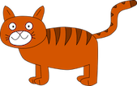
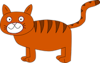

Overview

The Russian Blue made his first appearance on the world stage of the cat fancy at an exhibit of cats held at London’s Crystal Palace in 1875. Labeled an Archangel Cat, because he was said to be from the Russian island of Archangel, he competed against other blue cats of varying types. A British cat fancier named Mrs. Carew-Cox began importing the cats in 1890 and bred and showed them through the turn of the century. In 1912, the cats were well enough established that they could be shown in a class of their own instead of being lumped together with other blue cats. World War II nearly put an end to the breed. Very few cats survived the years of privation, and British and Scandinavian breeders turned to other breeds, primarily the Siamese and the British Blue, to help revive their bloodlines. Because of the Siamese influence, the cats developed a more extreme look, and the texture of their coat changed. It took years to bring the breed back to its original appearance.
Read more from Cat Time
Personality
The Russian Blue has a reputation as a gentle, quiet cat, somewhat shy, but don’t get the wrong idea. This cat may have a reserved nature, but he loves to play and enjoys jumping or climbing to high places where he can study people and situations at his leisure before making up his mind about whether he wants to get involved. Unlike some active, intelligent breeds, he is not destructive but moves through the house with the lithe grace of a Russian ballerina. When you are at home, his subtle sense of humor and manual dexterity will never fail to entertain. Count on him to be a faithful alarm clock in the morning, not so you don’t miss work but so he doesn’t miss a meal. If you take the time to develop a relationship with a Russian Blue, your reward will be a deep bond with this loving cat.
Read more from Cat TimeCare
The Russian Blue’s dense coat should be combed twice a week to remove dead hair and distribute skin oils. Brush the teeth to prevent periodontal disease. Daily dental hygiene is best, but weekly brushing is better than nothing. Trim the nails every couple of weeks. A bath when the cat is shedding will help to remove excess hair more quickly. Keep the Russian Blue’s litter box spotlessly clean. He is very particular about bathroom hygiene. Both pedigreed cats and mixed-breed cats have varying incidences of health problems that may be genetic in nature. The Russian Blue is generally healthy, however. An owner’s main concern will probably be this cat’s hearty Russian appetite, which can turn him from sleek to stout in no time.
Read more from Cat Time